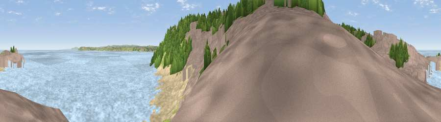

Viewpoint near St Ives
#28081 in England · top 68% of its area beats it · near St IvesThe view, rendered

A 360° render of this exact spot computed from the terrain model, tree cover and land cover — summer colours, afternoon light, calibrated against photographs of famous viewpoints. Real trees, hedges and buildings will differ in detail.
The panorama
Grey silhouette: terrain skyline in each direction (720 bearings, Earth curvature and refraction included). Dashed green: skyline with trees (+15 m) and buildings (+8 m) as obstacles. Blue strip: how far the ground is visible on each bearing.
Where the view opens
Wedge length = distance to the farthest visible ground on that bearing (vegetation-aware). Rings at 10, 25 and 50 km.
What fills the view
63% water · 18% built-up · 7% woodland · 6% bare ground · 4% grassland
Angular shares of the visible panorama (visual magnitude), not map area. Landscape diversity 0.48 (0–1 Shannon).
Key numbers
More beautiful places nearby
The staircase of upgrades: each row has a higher view potential than everything closer. Driving times are estimates from straight-line distance, calibrated against real road routing — check an actual route before setting out.
| Place | Direction | Drive | Score |
|---|---|---|---|
| Viewpoint near St Ives | N · 1 km | ~3 min | 52.5 |
| Viewpoint near Halsetown | SW · 2 km | ~4 min | 71.8 |
| Viewpoint near Halsetown | WSW · 3 km | ~7 min | 82.0 |
| Viewpoint near Towednack | WSW · 3 km | ~8 min | 84.2 |
| Rosewall Hill | WSW · 3 km | ~8 min | 88.0 |
| Viewpoint near Combe Martin | NE · 152 km | ~175 min | 88.9 |
| Holdstone Hill | NE · 153 km | ~176 min | 90.2 |
| The Knoll | ENE · 206 km | ~224 min | 91.0 |
50.21078, -5.47782 · source: osm viewpoint · position refined by local search. Computed location — check access rights before visiting.